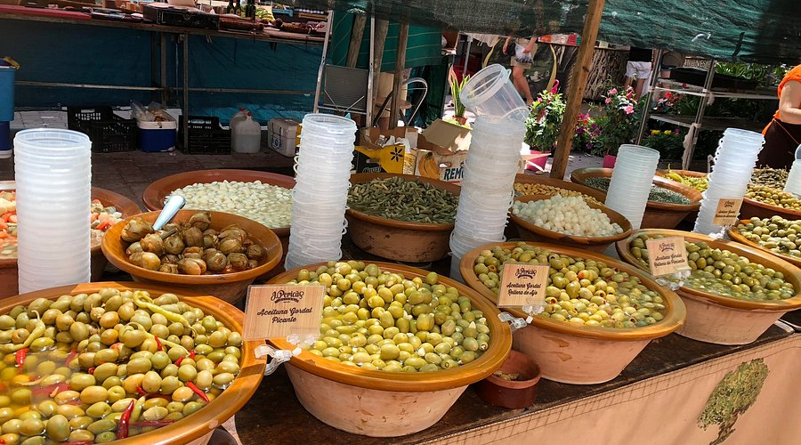
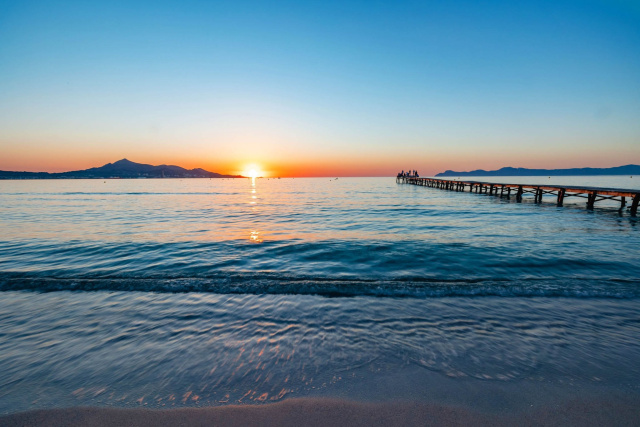

Aktivitäten rund um Alcúdia
Pollença Altstadt
Wunderschöne Altstadt mit engen Gassen, kleinen Cafés und entspannter Atmosphäre. Perfekt für einen ruhigen Nachmittag oder Cappuccino-Stop.
Puig de Maria Aussichtspunkt
Kleiner Anstieg oberhalb von Pollença mit toller Aussicht über den Norden Mallorcas. Ideal als kurzer Ausflug oder Spaziergang.
Altstadt von Alcúdia
Historische Stadtmauer, schöne kleine Gassen und viele Restaurants. Perfekt für einen entspannten Abend nach dem Training.
Tipp: Perfekt für einen Cappuccino nach der Rennradfahrt. Besonders schön am späten Nachmittag.
Playa de Muro
Langer Sandstrand ideal zum Spazieren, Sonnenuntergang schauen oder als Recovery-Tag nach einer anstrengenden Rennrad-Etappe.

Wochenmarkt in Alcúdia
Typischer mallorquinischer Markt mit Obst, Snacks und kleinen Souvenirs. Perfekt für einen entspannten Vormittag ohne Training.
Hafen von Port d'Alcúdia
Schöner Ort für einen Abendspaziergang nach dem Training mit Sonnenuntergang und Restaurants direkt am Wasser.

Sonnenuntergang am Meer
Perfekter Recovery-Moment nach langen Rennrad-Touren. Ruhiger Abschluss eines Trainingstages.
Café-Stop in Pollença
Ideal nach einer Fahrt: Cappuccino, kleine Snacks und entspannte Atmosphäre in der Altstadt.